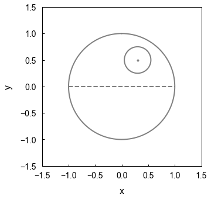

Download all files here or individually below.
The LaTeX file
\documentclass[aps,prb,twocolumn,groupedaddress,10pt,longbibliography,nofootinbib]{revtex4-2}
\usepackage{graphicx}
\usepackage{amsmath}
\usepackage{amssymb}
\usepackage{color}
\usepackage{ulem}
\usepackage[pdfstartview=FitH]{hyperref}
\pdfminorversion=7
\begin{document}
\title{Star Wars Episode IV: A New Hope}
\author{O.-W. Kenobi}
\affiliation{Tatooine, A Galaxy Far, Far Away.}
\begin{abstract}
It is a period of civil war. Rebel spaceships, striking from a hidden base, have won their first victory against the evil Galactic Empire. During the battle, Rebel spies managed to steal secret plans to the Empire’s ultimate weapon, the DEATH STAR, an armored space station with enough power to destroy an entire planet. Pursued by the Empire’s sinister agents, Princess Leia races home aboard her starship, custodian of the stolen plans that can save her people and restore freedom to the galaxy….
\end{abstract}
\maketitle
\section{Introduction}
Bobrick \textit{et al.} recently proposed a physical model for a warp drive\cite{Bobrick_2021}. The experiment proposed in ref.~\cite{PhysRevLett.128.163603} could finally show us what hyperspace looks like.
According to Einstein's theory of special relativity, energy is given by
\begin{equation}
E^2=(pc)^2+(mc^2)^2
\label{eq:Esquared}
\end{equation}
The Imperial Death Star, shown in fig.~\ref{fig:death_star}, generates enough energy to destroy an entire planet.
\begin{figure}%
\includegraphics[width=\columnwidth]{deathstarfig}%
\caption{The Death Star.}%
\label{fig:death_star}%
\end{figure}
The Death Star is estimated to have a diameter of around 160 km, housing nearly 2 million personnel. A breakdown is shown in table~\ref{table:forces}.
\begin{table}%
\begin{tabular}{|l|l|}
\hline
Crew & 265,675 \\
Troops & 607,360\\
Stormtroopers & 30,984\\
Gunners & 52,276\\
Pilots & 180,216\\
Support & 42,782\\
\hline
\end{tabular}
\caption{Death Star Personnel}
\label{table:forces}
\end{table}
The Death Star has only one vulnerability -- a thermal exhaust port just below the main port that leads to the main reactor. It is believed that a proton torpedo fired into the port will set off a chain reaction sufficient to destroy the space station. The target area is only two metres wide but is within the accuracy of the targeting system of the Rebel Alliance's X-wing fighters.
\begin{acknowledgments}
The author acknowledges helpful discussions with L. Skywalker and H. Solo. This work was funded by the Rebel Alliance.
\end{acknowledgments}
\bibliography{references}
\end{document}
The deathstarfig.eps file
The references.bib file
@article{Bobrick_2021,
doi = {10.1088/1361-6382/abdf6e},
url = {https://dx.doi.org/10.1088/1361-6382/abdf6e},
year = {2021},
month = {apr},
publisher = {IOP Publishing},
volume = {38},
number = {10},
pages = {105009},
author = {Alexey Bobrick and Gianni Martire},
title = {Introducing physical warp drives},
journal = {Classical and Quantum Gravity},
abstract = {The Alcubierre warp drive is an exotic solution in general relativity. It allows for superluminal travel at the cost of enormous amounts of matter with negative mass density. For this reason, the Alcubierre warp drive has been widely considered unphysical. In this study, we develop a model of a general warp drive spacetime in classical relativity that encloses all existing warp drive definitions and allows for new metrics without the most serious issues present in the Alcubierre solution. We present the first general model for subliminal positive-energy, spherically symmetric warp drives; construct superluminal warp-drive solutions which satisfy quantum inequalities; provide optimizations for the Alcubierre metric that decrease the negative energy requirements by two orders of magnitude; and introduce a warp drive spacetime in which space capacity and the rate of time can be chosen in a controlled manner. Conceptually, we demonstrate that any warp drive, including the Alcubierre drive, is a shell of regular or exotic material moving inertially with a certain velocity. Therefore, any warp drive requires propulsion. We show that a class of subluminal, spherically symmetric warp drive spacetimes, at least in principle, can be constructed based on the physical principles known to humanity today}
}
@article{PhysRevLett.128.163603,
title = {Acceleration-Induced Effects in Stimulated Light-Matter Interactions},
author = {\v{S}oda, Barbara and Sudhir, Vivishek and Kempf, Achim},
journal = {Phys. Rev. Lett.},
volume = {128},
issue = {16},
pages = {163603},
numpages = {6},
year = {2022},
month = {Apr},
publisher = {American Physical Society},
doi = {10.1103/PhysRevLett.128.163603},
url = {https://link.aps.org/doi/10.1103/PhysRevLett.128.163603}
}